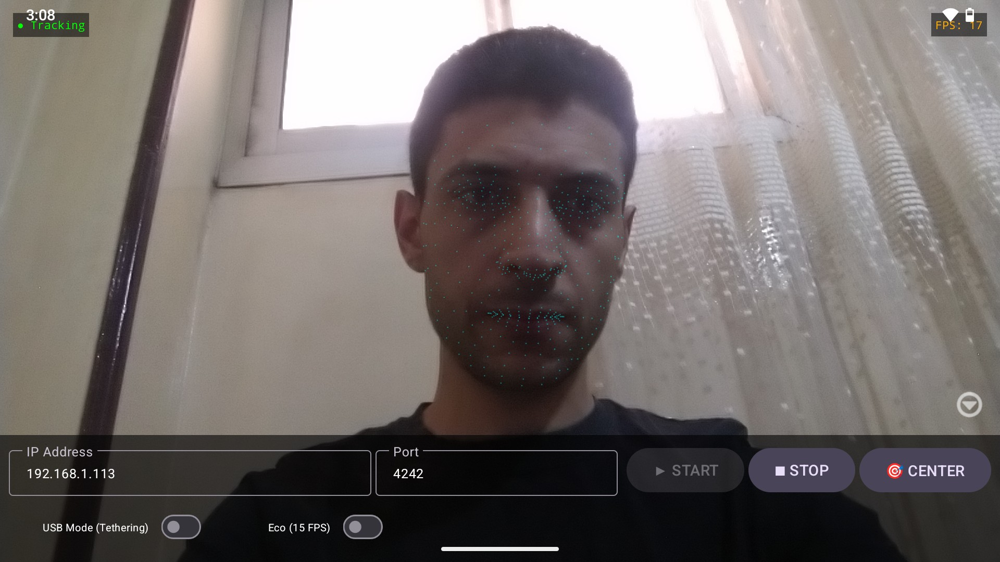
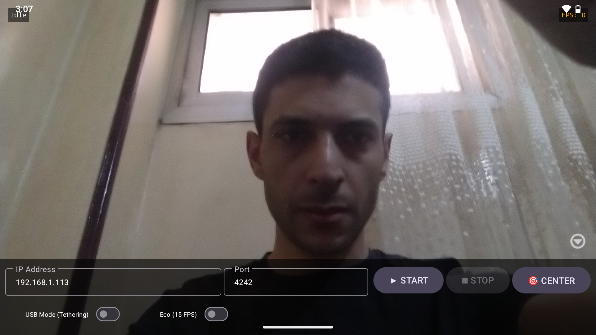
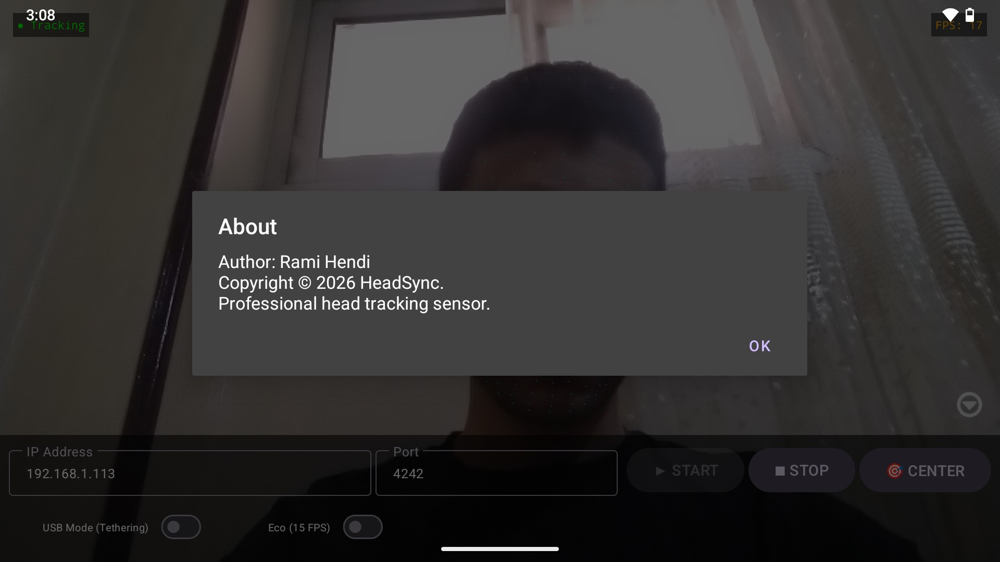

Transform your Android device into a precise 6-DOF tracking hub. Built for simulation gamers — flight, racing, and space sims.

High-fidelity tracking with AI, GPU acceleration, and professional-grade filtering.
Powered by Google MediaPipe, using the Facial Transformation Matrix to extract precise metric data (centimeters and degrees) directly from the face mesh.
6-DOF100% GPU-accelerated tracking ensures maximum frame rates, minimal battery drain, and zero thermal throttling during long gaming sessions.
PerformanceProfessional-grade smoothing eliminates high-frequency jitter when your head is still, while providing zero-latency response during rapid movements.
StabilityOperates as a Foreground Service. Tracking continues uninterrupted even if the app is minimized, the screen is locked, or the phone goes to sleep.
PersistenceA preview of the HeadSync interface — clean, real-time, and packed with feedback.


Follow these steps to connect HeadSync with OpenTrack on your PC.
UDP over network.
4242.
IP Address field.
192.168.42.x), and toggle USB Mode in the app.
Real-time visual feedback, centering, and what to expect.
For the most accurate tracking, you must calibrate the "Zero Point":
Common issues and how to resolve them.
No movement in OpenTrack.
4242 is allowed. An axis moves the wrong direction.
Tracking stops after locking the phone.
Tracking feels laggy.
Get HeadSync on your Android device and experience rock-solid 6-DOF head tracking.
Compatible with Android 7.0+ • OpenTrack protocol